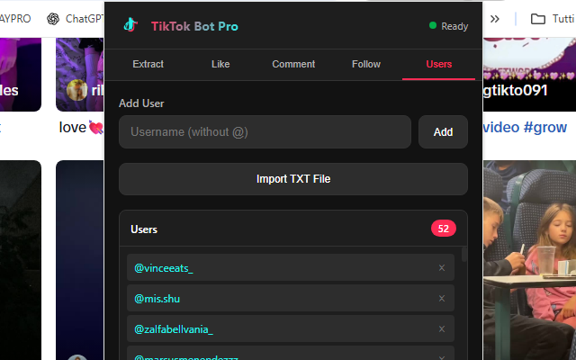

TikTok Bot Pro
Chrome Extension · Auto Like · Comment · Follow · Extract
Tired of spending hours on manual engagement? 🚀 TikTok Bot Pro is the ultimate automation tool that helps you grow your TikTok presence without the endless scrolling and clicking. This powerful Chrome extension automates likes, comments, follows, and even extracts user lists—all with just a few clicks.
Whether you're a content creator looking to expand your audience, a marketer managing multiple accounts, or simply someone who wants to grow their following efficiently, TikTok Bot Pro gives you the tools you need. The extension works directly within TikTok's interface, providing a seamless experience with a beautiful dark-themed overlay that lets you monitor progress in real-time.
✅ Features
- ✔User Extractor: Followers, following, hashtag users, commenters
- ✔Auto Like: Like posts by hashtag or user list
- ✔Auto Comment: Rotating comment list, fully automated
- ✔Bulk Follow/Unfollow: Mass follow or unfollow from a list
- ✔Smart Delays: Configurable min/max range between actions
- ✔Export to TXT: Save extracted users anytime
- ✔Floating Progress Popup: Monitor even when panel is closed
- ✔Real-time Logs: See exactly what's happening
- ✔Dark Theme UI: Modern, easy-on-the-eyes interface
- ✔Stop Anytime: Full control to pause or stop operations
📷 Screenshots


📖 Complete Guide
Step-by-step walkthrough of every feature — click any screenshot to enlarge.
Installation & Setup
- Install the extension from the Chrome Web Store
- Open TikTok in your browser (the extension opens it automatically if needed)
- Click the extension icon in the toolbar to open the control panel
- Choose your task from the panel tabs and configure settings
- Click Start and monitor progress in the floating popup
- Hit Stop at any time to pause the operation
Extract TikTok Followers
Navigate to any TikTok profile and open the extension panel. Switch to the Extract tab, select Followers as the source, set the maximum number of users to extract, and click Start. The extension will automatically scroll through the follower list and collect usernames in real-time. When done, click Export TXT to save the list — ready to use in any other automation tab.

Extract Users by Hashtag
Open the Extract tab and switch the source to Hashtag. Type the hashtag (without the #) into the field, set how many users to collect, and press Start. The extension will search TikTok for that hashtag, visit matching posts, and collect the authors' usernames — giving you a targeted list of creators and potential followers already engaged with your niche.

Auto Like
Head to the Like tab. Choose your target: a specific Hashtag or a User List (paste usernames or import your previously extracted TXT file). Configure the minimum and maximum delay between likes to mimic natural human behavior, then click Start. The floating progress popup keeps you updated with a live counter even when the panel is minimized. The free version allows 5 likes per session; unlock PRO for unlimited daily actions.

Auto Comment
Open the Comment tab. Add multiple comment texts (one per line or via TXT import) — the extension rotates through them randomly to avoid spam detection. Select your target (hashtag or user list), adjust delays, optionally enable Auto-Like while commenting for double engagement, and press Start. Real-time logs show each comment as it's posted so you always know what's happening.

Bulk Follow / Unfollow
Go to the Follow tab. Paste or import the list of usernames you want to target. Select Follow or Unfollow, set the delay range between each action, and click Start. The extension visits each profile automatically and clicks the follow/unfollow button. Smart delays between actions simulate human browsing and help keep your account safe. A great workflow: extract followers from a competitor profile → import the list here → bulk-follow them.

💡 Pro Tips
- ★ Use realistic delays (5–15 seconds) to mimic human behavior
- ★ Don't run 24/7 — take breaks between sessions
- ★ Start with small numbers and increase gradually
- ★ Mix automated and manual engagement for best results
- ★ Use quality, relevant comments — not generic spam
- ★ Extract niche hashtag users first, then target them with follow + like for highest conversion
With TikTok Bot Pro, growing your TikTok presence has never been easier. Save hours of manual work, engage with your target audience automatically, and focus on what matters most — creating great content. No complicated setup, no external software: just install, configure, and grow! 🚀
⬇️ Install Free from Chrome Web Store⚠️ Disclaimer: This tool is for educational purposes. Use responsibly and in accordance with TikTok's Terms of Service. The developers are not responsible for any account restrictions.